Company · est. 2005
Twenty-one years in one cluster
Changshu Ryder Textile Co., Ltd. was established in 2005 in Changshu, Jiangsu — the centre of China's knit textile industry. It operates as a subsidiary of Landsun Textile Group, and it has spent those years adding stages to the chain rather than customers to a broker list: knitting, then dyeing, then finishing, then export.
Resilience, innovation and quality — 常熟锐德纺织有限公司
Company record
Legal nameChangshu Ryder Textile Co., Ltd.
Established2005
ParentLandsun Textile Group
LocationChangshu, Jiangsu Province, China
Footprint55,000+ sqm · 3 factories · 2 trading arms
Customers20+ global and Chinese brands
Markets11
Employees[[NEEDS INPUT]]—
Annual output[[NEEDS INPUT]]—
Group structure
RyderTex sits inside Landsun Textile Group. Three manufacturing factories handle knitting, dyeing and finishing; two trading arms handle export documentation and customer accounts. Buyers deal with one commercial contact regardless of how many stages their order touches.
[[NEEDS INPUT: leadership names, titles and photography]]
Customers
Twenty-plus global and Chinese brands

Brand marks shown are customers of the mill; they are not endorsements.